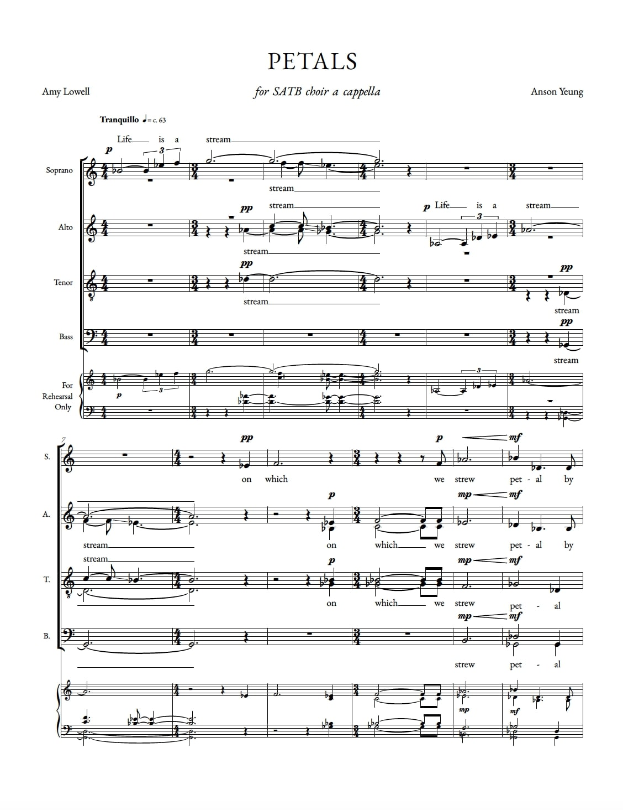
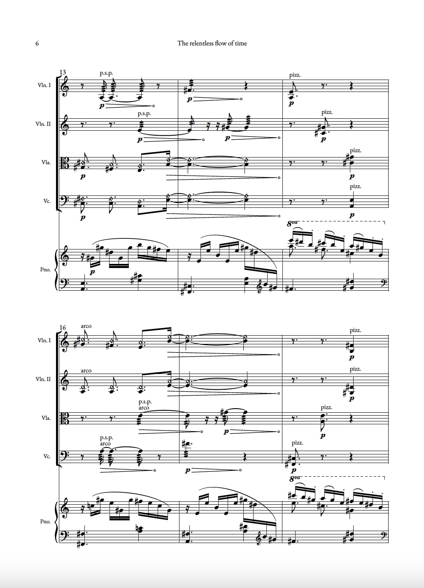

The Tale of a Moth - for violin and piano (2026)
Petals - for unaccompanied SATB choir with divisi (2025)
Text by Amy Lowell (1874 – 1925)
Life is a stream
On which we strew
Petal by petal the flower of our heart;
The end lost in dream,
They float past our view,
We only watch their glad, early start.
Freighted with hope,
Crimsoned with joy,
We scatter the leaves of our opening rose;
Their widening scope,
Their distant employ,
We never shall know.
And the stream as it flows
Sweeps them away,
Each one is gone
Ever beyond into infinite ways.
We alone stay
While years hurry on,
The flower fared forth, though its fragrance still stays.

Lost in Time - for 2 violins, viola, cello and piano (2025)
A more detailed programme note is given in the full score
